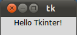
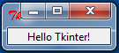
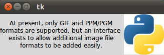
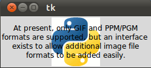
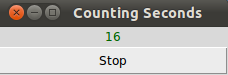

Next Chapter: Message Widget
Tkinter
Hello Tkinter Label

We will start our tutorial with one of the easiest widgets of Tk (Tkinter), i.e. a label. A Label is a Tkinter Widget class, which is used to display text or an image. The label is a widget that the user just views but not interact with.
There is hardly any book or introduction into a programming language, which doesn't start with the "Hello World" example. We will draw on tradition but will slightly modify the output to "Hello Tkinter" instead of "Hello World".
The following Python script uses Tkinter to create a window with the text "Hello Tkinter". You can use the Python interpretor to type this script line after line, or you can save it in a file, for example "hello.py":
from Tkinter import * # if you are working under Python 3, comment the previous line and comment out the following line #from tkinter import * root = Tk() w = Label(root, text="Hello Tkinter!") w.pack() root.mainloop()
Starting our example
If we save the script under the name hello.py, we can start it like this:$ python hello.pyIf you run the command under the Gnome and Linux, the window the window will look like this:

Under Windows it appears in the Windows look and feel:

Explanation
The Tkinter module, containing the Tk toolkit, has always to be imported. In our example, we import everything from Tkinter by using the asterisk symbol ("*") into our module's namespace:from Tkinter import *To initialize Tkinter, we have to create a Tk root widget, which is a window with a title bar and other decoration provided by the window manager. The root widget has to be created before any other widgets and there can only be one root widget.
root = Tk()The next line of code contains the Label widget. The first parameter of the Label call is the name of the parent window, in our case "root". So our Label widget is a child of the root widget. The keyword parameter "text" specifies the text to be shown:
w = Label(root, text="Hello Tkinter!")The pack method tells Tk to fit the size of the window to the given text.
w.pack()The window won't appear until we enter the Tkinter event loop:
root.mainloop()Our script will remain in the event loop until we close the window.
Using Images in Labels
As we have already mentioned, labels can contain text and images. The following example contains two labels, one with a text and the other one with an image.
from Tkinter import *
root = Tk()
logo = PhotoImage(file="../images/python_logo_small.gif")
w1 = Label(root, image=logo).pack(side="right")
explanation = """At present, only GIF and PPM/PGM
formats are supported, but an interface
exists to allow additional image file
formats to be added easily."""
w2 = Label(root,
justify=LEFT,
padx = 10,
text=explanation).pack(side="left")
root.mainloop()
If you start this script, it will look like this using Ubuntu Linux with Gnome desktop:

The "justify" parameter can be used to justify a text on the LEFT, RIGHT or CENTER. padx can be used to add additional horizontal padding around a text label. The default padding is 1 pixel. pady is similar for vertical padding. The previous example without justify (default is centre) and padx looks like this:

You want the text drawn on top of the image? No problem! We need just one label and use the image and the text option at the same time. By default, if an image is given, it is drawn instead of the text. To get the text as well, you have to use the compound option. If you set the compound option to CENTER the text will be drawn on top of the image:
from Tkinter import *
root = Tk()
logo = PhotoImage(file="../images/python_logo_small.gif")
explanation = """At present, only GIF and PPM/PGM
formats are supported, but an interface
exists to allow additional image file
formats to be added easily."""
w = Label(root,
compound = CENTER,
text=explanation,
image=logo).pack(side="right")
root.mainloop()

We can have the image on the right side and the text left justified with a padding of 10 pixel on the left and right side by changing the Label command like this:
w = Label(root,
justify=LEFT,
compound = LEFT,
padx = 10,
text=explanation,
image=logo).pack(side="right")
If the compound option is set to BOTTOM, LEFT, RIGHT, or TOP, the image is drawn correspondingly to the bottom, left, right or top of the text.
Colorized Labels in various fonts
Some Tk widgets, like the label, text, and canvas widget, allow you to specify the fonts used to display text. This can be achieved by setting the attribute "font". typically via a "font" configuration option. You have to consider, that fonts are one of several areas that are not platform-independent.The attribute fg can be used to have the text in another colour and the attribute bg can be used to change the background colour of the label.
from Tkinter import * root = Tk() Label(root, text="Red Text in Times Font", fg = "red", font = "Times").pack() Label(root, text="Green Text in Helvetica Font", fg = "light green", bg = "dark green", font = "Helvetica 16 bold italic").pack() Label(root, text="Blue Text in Verdana bold", fg = "blue", bg = "yellow", font = "Verdana 10 bold").pack() root.mainloop()The result looks like this:

Dynamical Content in a Label
The following script shows an example, where a label is dynamically incremented by 1 until the stop button is pressed:
import Tkinter as tk
counter = 0
def counter_label(label):
def count():
global counter
counter += 1
label.config(text=str(counter))
label.after(1000, count)
count()
root = tk.Tk()
root.title("Counting Seconds")
label = tk.Label(root, fg="green")
label.pack()
counter_label(label)
button = tk.Button(root, text='Stop', width=25, command=root.destroy)
button.pack()
root.mainloop()
The result of the previous script looks like this:
